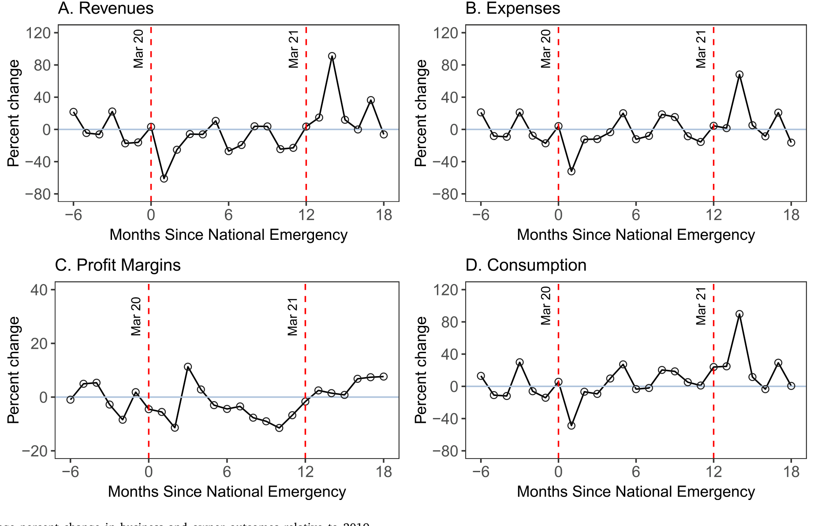
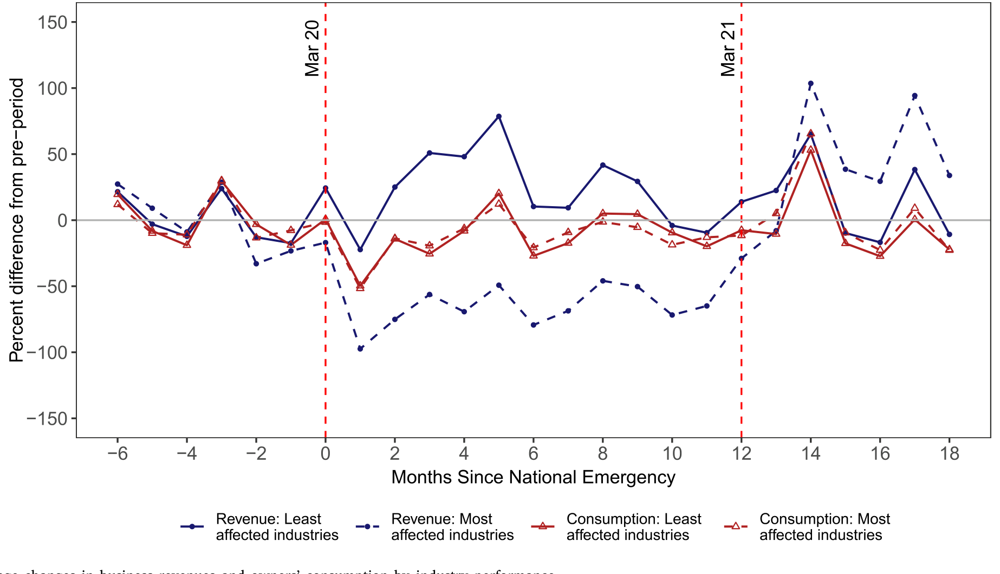
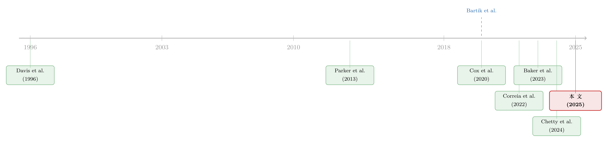

生意垮了一半，日子却照过：营收每损失一块钱，老板只省下 1.6 美分
本文读的是 Kim, Parker & Schoar (2025, Journal of Financial Economics)：用 JPMorgan Chase 把小企业账户和店主个人账户「连起来」的微观数据，作者发现疫情头两个月小企业营收暴跌四成，但这场塌方传导到店主消费上的力道极弱——营收每损失一块钱，店主只把消费砍掉 1.6 美分。换句话说，「店主的生活水平和自家生意紧紧绑在一起」这条常识，在疫情期间基本失灵了。而原因，藏在联邦政府的天量补贴和「无处可花钱」这两件事里。
1 一个被默认了几十年的常识
先说一句几乎没人会反驳的话：一个开小店的人，他的生活过得好不好，和他这家店赚不赚钱，应该是高度绑定的。
这句话听上去天经地义。和大公司不一样，小企业背后往往不是一群分散持股、早就把鸡蛋放进无数个篮子的股东，而是一两个把身家性命都押在这家店上的人（FRBNY, 2019）。小企业本身也更脆——固定成本低、缓冲薄，经济一掉头，它们比大公司收缩得更早、更狠（Davis et al., 1996）。所以一旦生意垮了，店主的日子理应跟着垮。这几乎是公司金融和消费理论共同的「默认设置」：店主的消费，是对自家经营收入的一面镜子。
然后，2020 年 3 月，一场前所未有的压力测试来了。
2020 年 3 月 13 日，美国宣布进入「国家紧急状态」。接下来的两三个月里，小企业的平均营收暴跌了四成以上——这个数字和其他用就业（Bartik et al., 2020a; Chetty et al., 2024）、用现金流（Farrell et al., 2020b）做的研究高度吻合。营收塌成这样，按照上面那条常识，店主的消费也该断崖式下滑，而且要跌得和营收差不多惨。
那么，一个自然的问题是：店主的消费，真的跟着自家生意一起塌了吗？
这篇论文的全部张力，就在这个问题的答案上。
2 数据：把「生意」和「过日子」缝在同一张表里
要回答这个问题，光有营收数据不够，你必须能同时看到同一个人的生意账和家庭账——这家店这个月进账多少，这位店主这个月又花了多少。这正是过去的数据做不到的地方。
本文用的是 JPMorgan Chase Institute（JPMCI）的去标识化银行账户数据。作者的做法是：先从全行的小企业支票账户出发，用一系列筛选（剔除多账户、多地点、多行业的企业，要求账户在 2019 年「活跃」——每月至少三笔交易、连续开立十二个月等），把 344 万家小企业筛到 240 万家「2020 年初仍在经营」的样本；再把其中能匹配到店主本人个人账户的企业挑出来，要求个人账户在 2019 年每个月都有活动（因为个人账户不像生意账户那样有季节性波动），最终得到 363,682 对「小企业—店主」配对。
这套数据有个常被忽视但很关键的优点：它对无雇员企业 (non-employer businesses) 有相当的覆盖，因此样本的行业分布和全美小企业部门相当接近——而后者贡献了美国 44% 的经济活动、三分之二的净就业增长（SBA, 2019）。很多基于调查或上市公司的研究恰恰漏掉了这群「夫妻店」。
营收和支出怎么算？作者把账户里的资金流逐笔归类。营收的定义很干净，就是经营性进账：
$$ \textit{OperatingRevenue} = \text{Total Inflows} - \text{Financial Inflows} - \text{Non-business income} $$
也就是说，从总进账里扣掉那些不是卖货卖服务赚来的钱——账户间转账、手续费冲正、贷款流入这类「金融性流入」，以及失业救济、退税、退伍军人福利、零工平台收入这类「非经营性收入」。剩下的，才是这家店真正的营业额。支出端则按对手方、商户类别码 (Merchant Category Code) 等标签拆成燃料、设备、食杂、工资、税、债务偿还等十几个明细类。店主的消费 (consumption)，同样从个人账户的借记交易里按对手方归类得到。
一个值得称道的处理细节：对于中途倒闭、账户关停的企业，作者把它后续的营收和支出记为持续的零，而不是直接把它从样本里删掉。这一步是为了堵住幸存者偏差 (survivorship bias)——如果你把疫情里表现最差、已经倒下的店悄悄丢掉，剩下的样本会假装小企业部门「没那么惨」。
最终的面板覆盖 380,532 家企业、333,128 位店主，时间从 2019 年 9 月到 2021 年 9 月。
3 第一幕：营收和消费，确实一起塌了
先看最朴素的事实。下图把企业和店主的各项指标相对 2019 年画了出来。

Figure 2: Average percent change in business and owner outcomes relative to 2019
故事的第一幕完全符合常识：2020 年第一季度，平均营收掉了四成多，而店主的消费也平均跌了四成多。两条线几乎是手挽手往下走的。支出端也紧贴营收——说明小店在营收骤降时迅速「瘦身」砍开支，等营收回来了再扩回去。
更妙的是恢复的节奏。营收在 2020 年 3 月触底后稳步回升，到 2021 年 4 月新冠疫苗大规模铺开时出现一个陡峭的跳升；店主消费则在五个月内就回到了疫情前水平，疫苗推出后同样大幅反弹。
如果故事到这里就结束，那它无非是「疫情很惨、小企业和店主一起遭殃」的又一个版本。但真正关键的一步，恰恰在于不能停在这里。
因为「营收跌四成、消费也跌四成」这两件事同时发生，并不意味着是营收的下跌导致了消费的下跌。疫情这只大手，是同时按住了营收和消费两个变量的：店主的消费之所以下滑，可能根本不是因为自家生意差了，而是因为他和所有人一样——怕被传染不敢出门、想花钱也没地方花、商场餐厅都关了。Cox et al. (2020) 就发现，连那些收入完全没受影响的工薪家庭，疫情头几个月的消费也在普遍收缩。
于是问题被逼到了墙角：在这场全民收缩里，到底有多少消费下滑，是「我这家店垮了」这个特定原因直接逼出来的？
4 真正关键的一步：怎么把「我的店」从「这场疫情」里剥出来
这就是全文识别策略的核心。作者面对的，是一个典型的内生性 (endogeneity) 困局：
第一，消费和营收是同时被决定的——对任何一家店来说，店主自己既是这家店的经营者，又是这家店所在社区的消费者，营收和消费会被同一批本地因素（本地感染率、出行限制）一起推动。
第二，本地的疫情冲击会绕过生意、直接作用于消费：一个住在重灾区的店主，既可能因为本地萧条而营收下滑，也会因为「出门有风险」而主动少花钱——后面这条通道和他的生意好坏毫无关系。
作者的解法是一套两阶段最小二乘 (two-stage least squares, 2SLS)，分两层把噪音剥掉：
- 第一层，用 县 × 月 固定效应 (county × time fixed effects) 吸掉本地共同冲击。 这样比较的就只是同一个县、同一个月里的不同企业——本地感染率、本地出行限制、本地的恐慌情绪，对这些企业是一样的，被固定效应一笔勾销。
- 第二层，用行业暴露度造一个工具变量。 即便在同县同月，消费和营收仍然是共决的。于是作者用 4 位 NAICS 行业 与本地感染率、就地避难令 (Shelter-in-Place, SIP) 的交互项，去预测营收的变化。直觉是：同样一道 SIP 令落在一个县里，餐馆、健身房受到的打击远大于五金店、杂货铺；这种「行业 × 本地政策」造出来的营收波动，被认为与消费里残余的那部分内生变动正交 (orthogonal)——它只通过「你这个行业被政策打到了」这条路影响营收，而不直接动消费。
这个工具变量的「劲」有多大？作者算过：自国家紧急状态以来，受影响最小的五个行业，营收变化在「零到上涨 20%」之间；而受影响最大的五个行业，营收跌幅高达 90%。行业之间的差异足够剧烈，第一阶段不愁没有识别力。
这套识别的命门，是那条排他性约束 (exclusion restriction)：「行业 × 本地疫情/政策」造出来的营收波动，除了通过营收，不能有别的渠道影响店主消费。这一点并非无懈可击——后面的「评论与延伸」里我们会拧一拧它。
5 反转：一块钱营收损失，只换来 1.6 美分的消费收缩
把内生性剥干净之后，反转出现了。
作者估出来的传导率 (pass-through) 小得惊人：营收每损失一块钱，店主只把消费砍掉 1.6 美分；支出每损失一块钱，消费砍掉 2.6 美分。
这个数字到底有多小？作者算了一笔特别直观的账。封锁期里，相对疫情前的均值，小企业每月营收平均掉了 -$2400。按 1.6 美分的传导率，这意味着「因为生意变差」而直接逼出来的消费下滑，每月大约只有 $36。而同期店主消费每月实际的变化量是 $396——也就是说，真正由自家营收塌方所「解释」的那部分，连一成都不到。
剩下九成多的消费收缩去哪了？它们和这家店的具体经营根本无关，而是被那场全国性的危机本身按下去的。
这就把开头那条「天经地义」的常识，结结实实地掀翻了：在疫情期间，一个小企业主的生活水平，和他自家生意的死活，基本是脱钩的。
那么，前面那张「营收和消费手挽手下跌」的图，又该怎么理解？答案是：它是一种巧合性的同步——两条线一起跌，不是因为一条拽着另一条，而是因为同一只大手同时把它们都按了下去。一旦你用县 × 月固定效应把那只大手摁住，两者之间那根「因果绳」就细得几乎看不见了。
6 那么本地疫情和政策，到底有没有用？
既然全国性因素是主角，自然要回头问：本地的感染率、本地的封锁政策，单独看又有多大作用？
作者把营收等指标对感染率和 SIP 令做回归，并加入周度时间固定效应来吸掉全国因素，结果是「本地」的直接效应相当温和：
- 新增感染率每上升一个标准差，企业营收只下降
0.5%； - 一道 SIP 令落地，会带来
11%的增量营收下滑、5.4%的店主消费下滑； - 换用一个综合的 NPI 严厉度 (NPI strictness) 指标（用主成分分析把各州一篮子非药物干预政策的强度压成一维），严厉度每上升一个标准差，营收、支出、消费的降幅都不到 5 个百分点。
这个发现——「就算政策落到你头上，打击也有限」——与 Correia et al. (2022) 遥相呼应：那篇文章研究 1918 年大流感时发现，干预政策更严厉的城市，经济表现并不比宽松的城市更差。两相对照下，本文的态度更进一步：相比把经济停摆主要归因于「疫情本身」，作者发现本地疫情发病率的直接经济效应，其实更温和。真正的破坏力，来自全国层面的总需求塌方，而非你家门口的那串确诊数字。
不同类型的企业，在营收上确实分化——大企业、非必需行业（non-essential，按 CISA 标准并辅以新闻核验划定，样本里约 60% 是必需行业）跌得更深，恢复得更慢；小企业、必需行业三个月就开始回血。下图按「行业受冲击程度」把营收和店主消费并排画了出来。

Figure 7: Average changes in business revenues and owners’ consumption by industry performance
但请注意：这种营收上的巨大分化，几乎没有传导到消费的分化上。 哪怕你这一行被打得最狠，你作为店主的消费，也没有比同行多收缩多少。传导率在不同雇主状态、不同事前流动性 (liquidity) 的企业之间都很稳定；只有更小的企业、以及组织形式为穿透实体 (pass-through entities) 的店主，对营收损失稍微更敏感一些——这很符合直觉：越小、越没有公司这层「隔火墙」的店主，生意和家庭的财务越难分得开。
7 为什么传导这么弱？两个答案
一个估计如果只停在「数字很小」，是不完整的。作者花了一整节去回答为什么。
第一个答案：联邦政府的天量补贴，给店主的消费上了一道「稳定器」。 数据里看得清清楚楚：2020 年 4、5 月，正是经济影响补助金 (Economic Impact Payment, EIP) 和薪资保护计划 (Paycheck Protection Program, PPP) 拨款的时候，企业账户和个人账户的现金余额双双急升，而且一直高企到样本结束。换句话说，营收这条「水管」断了，但政府从另一头把水补了进来，店主的消费水池水位没怎么降。这一点和 Parker et al. (2022) 关于补助金大量被储蓄的发现是一脉相承的——钱发下去，先变成了缓冲垫。（关于疫情救济资金如何在经济中四处流动、甚至流向意想不到的地方，可参见《偷来的钱，会去买房——疫情救济金欺诈如何悄悄抬高了美国房价》。）
第二个答案：疫情本身限制了「能花钱的机会」。 尤其在头三个月，旅行、堂食、个人服务这些「奢侈或需要近距离接触」的消费被物理性地掐断了。哪怕你手里有钱、营收也还行，你也花不出去。这会让消费天然地对营收变化不敏感——因为消费的天花板不是收入，而是「商场开没开门」。
这两个解释还有一个漂亮的交叉验证：疫苗铺开之后，营收到消费的传导率翻了一倍多。 当人们重新能出门、能花钱，那道被疫情焊死的天花板被掀开，自家生意的好坏才重新开始「咬住」店主的钱包。
把两个答案合起来看，本文真正的贡献不止是「测出一个很小的 MPC」，而是讲清了这个小数字为什么会出现、以及它何时会失效。作者在文末留了一句冷静的提醒：现金余额至今仍然高企，但随着政府的钱被慢慢花光，营收损失向消费的传导，未来可能会上升。这道稳定器，是有保质期的。
8 文献脉络：从「随机刺激」到「全民冲击」
要理解这篇论文坐在什么位置，得把两条线接起来看。
一条线，是测量边际消费倾向 (marginal propensity to consume, MPC) 的老传统。这条线几十年来的标准玩法，是找一个外生的、暂时性的收入冲击，看家庭把多少花掉：刺激金发放时点的随机化（Parker et al., 2013; Broda & Parker, 2014）、退税的时点与金额（Baugh et al., 2021）、失业保险带来的收入损失（Ganong & Noel, 2019）、车贷还清后的可支配收入变化（Stephens, 2008）。它们测的几乎都是工薪家庭对收入波动的反应。
另一条线，是疫情爆发后井喷的小企业研究。早期大量是调查：Bartik et al. (2020a) 发现到 2020 年 3 月底已有 43% 的企业临时关门；行政数据则记录到企业现金余额中位数骤降 12.7%（Farrell et al., 2020b），以及恢复速度上沿种族、沿社区收入的巨大分化（Fairlie, 2020; Chetty et al., 2024）。还有 Correia et al. (2022) 那条关于「干预政策到底伤不伤经济」的争论。

本文站在这两条线的交汇点上，并把它们各推进了一步。相对 MPC 文献，它第一次系统地测量了小企业主——这群收入波动远比工薪族剧烈、且和自己经营深度绑定的人——的传导率，按理说应该测出一个更高的 MPC；可它偏偏测出了一个异常低的数字，原因是这次冲击同时伴随着「巨额公共援助」和「花钱机会被压缩」。相对小企业文献，它第一次把生意账和家庭账缝在同一张表里，从而能干净地回答「营收塌方多大程度上拖垮了店主的生活」这个此前无法识别的问题。（关于危机中企业的另一种应对——主动适应而非被动承受，可参见《先举手的人：危机里，「主动适应」到底值多少钱？》；关于疫情贷款担保如何重新分配风险，参见《一块钱的担保，换走了多少自己的风险？》。）
9 评论与延伸（Q&A + 研究方向）
(a) 几个可能的疑问
Q：这里测的「传导率」，和教科书里的 MPC 是一回事吗？
不完全是。标准 MPC 测的是「一笔外生收入冲击里花掉多少」。本文测的是「营收损失向店主消费的传导率」，且这笔营收损失是用「行业 × 本地疫情/政策」工具变量识别出来的那一部分。它更像是「在控制住全国冲击和本地共同冲击后，纯粹由自家生意变差所驱动的消费反应」。所以
1.6美分这个数字，不该被直接读成「店主的 MPC 是 0.016」。
Q：营收和消费一起跌四成，凭什么说它们没有因果关系？
正因为它们「一起」跌，才不能直接下因果结论。疫情同时压低了营收和消费——前者因为没生意，后者因为不敢/不能花钱。作者用县 × 月固定效应把这只「共同的手」摁住后，剩下的「营收→消费」直接效应才小到
1.6美分。那张同步下跌的图，是混杂因素制造的假象，不是因果。
Q：那条排他性约束可信吗？「行业 × 本地政策」真的只通过营收影响消费？
这是最该追问的地方。一个隐患是：你所在行业被 SIP 令打得越狠，往往也意味着你这个行业的消费场景被关得越死（餐馆老板既少了营收，作为食客也没饭店可去）。如果行业暴露度同时影响店主作为消费者的「花钱机会」，那它就不只通过营收这一条路，排他性约束会被侵蚀，传导率可能被低估。作者用「疫苗后传导率翻倍」来侧面支持机制，但这条约束本身仍需读者自行掂量。
Q：会不会是 JPMC 的样本太「健康」，幸存者偏差让结果偏乐观？
作者对此有防御：倒闭企业的营收/支出被记为「持续的零」而非删除，正是为了堵幸存者偏差。但样本毕竟是「2020 年初仍在 JPMC 开户且活跃」的企业，最脆弱、最早出局、或主要用现金/别家银行的店主可能根本进不来。对这群人，传导率未必这么低。
Q：现金余额一直很高，会不会只是「钱还没花到」，而不是「不想花」？
很可能正是如此，而作者也坦率承认了这一点。EIP/PPP 的钱先变成了储蓄缓冲，叠加疫情压缩了花钱机会，于是消费暂时对营收不敏感。文末明确提示：随着政府资金耗尽、消费场景恢复，传导率会上升。所以
1.6美分是一个特定时期、特定政策环境下的数字，不是结构性常数。
Q：为什么更小、穿透实体的店主反而更敏感？
因为对越小的店、越没有公司这层法律「隔火墙」的店主，生意账户和家庭账户在事实上是同一个钱包，营收波动几乎无摩擦地流进家庭支出；而较大或已公司化的企业，店主可以靠企业留存、债务、或公私账户的腾挪来平滑，传导自然更弱。
(b) 几个可能的研究问题与提案
1. 信用市场版的「传导率」：营收冲击向小企业信贷可得性的传导有多强？
【经济故事】本文测的是营收→消费。一个自然的延伸是营收→融资：当一家小企业营收塌方，它的银行授信额度、信用卡可用额度、应付账款条件会被同步收紧吗？如果政府担保（PPP）把这条传导也掐断了，那「信贷替代」的福利账就值得算。 【可行性】中。需要把企业营收数据与征信/授信数据（如 Experian、PayNet 或银行内部额度数据）匹配，识别可沿用本文「行业 × 本地政策」的工具变量。难点在拿到授信额度的面板。
2. 把视角换到公司债与私人信贷：店主的「不传导」，是否压低了小企业债务的违约？
【经济故事】如果店主消费没垮、企业靠补贴现金高企，那么小企业贷款/私人信贷的违约率在疫情期间应该异常地低（Wang et al., 2022 已记录破产申请反常地少）。可以反过来用违约数据去反推政府补贴的「隐性担保价值」，并问：补贴退潮后违约是否滞后上升。 【可行性】高。私人信贷与小企业贷款违约数据相对可得（如 SBA 7(a) 贷款、银行 call report、私人信贷基金披露），识别可用补贴拨付时点的地区差异。
3. 外资/外部持有人版本：有外部股东的小企业，传导率会不会更高？
【经济故事】本文样本几乎都是店主自有企业。一个对照是有外部股权（PE、VC、外部合伙人）的小企业：外部持有人会要求分红、收紧预算约束，营收冲击是否更刚性地传导到所有者的现金流上？这能把「所有权结构如何调节冲击传导」讲清楚。 【可行性】中。需要小企业的股权结构信息（如 PitchBook 配合银行账户），匹配是主要障碍；识别可比较有/无外部投资人的同行业同地区企业。
4. 「花钱机会」这个天花板能不能被直接测量？
【经济故事】本文把「消费场景被压缩」当作弱传导的关键机制，但只是间接验证（疫苗后翻倍）。可以用本地商户营业状态（如 SafeGraph 客流、Yelp 关停数据）构造一个「本地消费机会指数」，直接检验传导率是否随这个指数变动，从而把机制从「推测」变成「可测」。 【可行性】高。SafeGraph/Yelp 类数据公开可得，可与本文风格的银行消费数据在县层面合并，做异质性传导回归。
5. 流动性缓冲的非线性：补贴用尽的「断崖」何时到来？
【经济故事】作者预言传导率会随政府资金耗尽而上升。可以做一个事件研究，追踪那些 PPP/EIP 资金在 2021–2022 年陆续见底的店主，看他们的消费是否在「缓冲耗尽」的那一刻突然开始对营收敏感——这是检验「稳定器有保质期」这一论断的直接证据。 【可行性】中。需要把账户现金余额的时间序列延长到 2022 年之后，识别可用「事前缓冲厚度」做异质性，难点是数据时间窗口能否拿到。
10 我的判断
这篇论文最让我欣赏的，是它把一个被默认了几十年、却从没被干净识别过的常识——「店主的日子和自家生意绑死」——拿到一场极端实验里去验，然后给出了一个反直觉、却被机制解释得很扎实的答案。1.6 美分这个数字本身会被记住，但更有价值的是作者没有止步于此：他们用现金余额的时序、用疫苗前后的对照，把「为什么这么小」和「什么时候会变大」一并讲清楚了。把生意账和家庭账缝在同一张表里，是这篇文章方法论上的真正贡献——它让「经营冲击如何渗进家庭生活」第一次变得可测。
我对识别的主要担心，集中在那条排他性约束上。「行业 × 本地疫情/政策」造出来的营收波动，很难保证只通过营收影响店主消费——一个行业被政策打得越狠，这个行业对应的消费场景往往也关得越死，而店主本人同时是这个场景的消费者。这会让工具变量沾上「直接影响消费」的渠道，把传导率往下压。作者用疫苗后翻倍来侧证机制，有说服力，但没有正面拆掉这个隐患。此外，样本天然偏向「活到 2020 年初、且主要用 JPMC」的企业，最脆弱的那一批可能根本不在样本里。
后续我最想看到两件事：一是把时间窗口拉长到 2022 年补贴退潮之后，去正面检验作者那句「传导率未来会上升」的预言——这是这篇文章留下的最锋利、也最可证伪的一句话；二是把同样的「缝合两张账表」的方法搬到信用市场，看营收冲击向小企业融资和违约的传导，是不是也被那道财政稳定器同样地摁住了。如果是，那我们对「2020–2021 年小企业部门为什么没有崩盘」这件事的理解，就会从「韧性」彻底改写成「补贴」。
参考文献
- Baker, S. R., Farrokhnia, R. A., Meyer, S., Pagel, M., & Yannelis, C. (2023). Income, liquidity, and the consumption response to the 2020 economic stimulus payments. Review of Finance 27, 2271–2304.
- Bartik, A. W., Bertrand, M., Cullen, Z., Glaeser, E., Luca, M., & Stanton, C. T. (2020). How are small businesses adjusting to COVID-19? Early evidence from a survey. Proceedings of the National Academy of Sciences 117(30), 17656–17666.
- Bartlett, R. P., & Morse, A. (2021). Small-business survival capabilities and fiscal programs: Evidence from Oakland. Journal of Financial and Quantitative Analysis 56, 2500–2544.
- Broda, C., & Parker, J. A. (2014). The economic stimulus payments of 2008 and the aggregate demand for consumption. Journal of Monetary Economics 68, S20–S36.
- Chetty, R., Friedman, J. N., Stepner, M., & Opportunity Insights Team (2024). The economic impacts of COVID-19: Evidence from a new public database built using private sector data. Quarterly Journal of Economics 139, 829–889.
- Correia, S., Luck, S., & Verner, E. (2022). Pandemics depress the economy, public health interventions do not: Evidence from the 1918 flu. Journal of Economic History 82, 917–957.
- Cox, N., Ganong, P., Noel, P., Vavra, J., Wong, A., Farrell, D., & Greig, F. (2020). Initial impacts of the pandemic on consumer behavior: Evidence from linked income, spending, and savings data. Brookings Papers on Economic Activity.
- Davis, S. J., Haltiwanger, J., & Schuh, S. (1996). Small business and job creation: Dissecting the myth and reassessing the facts. Small Business Economics.
- Fairlie, R. W. (2020). The impact of COVID-19 on small business owners: Evidence of early-stage losses from the April 2020 Current Population Survey. NBER Working Paper.
- Farrell, D., Wheat, C., & Mac, C. (2020). Small business financial outcomes during the onset of COVID-19. JPMorgan Chase Institute.
- Ganong, P., & Noel, P. (2019). Consumer spending during unemployment: Positive and normative implications. American Economic Review 109(7), 2383–2424.
- Kim, O. S., Parker, J. A., & Schoar, A. (2025). Revenue collapses and the consumption of small business owners in the COVID-19 pandemic. Journal of Financial Economics 170, 104079.
- Parker, J. A., Schild, J., Erhard, L., & Johnson, D. S. (2022). Economic impact payments and household spending during the pandemic. Brookings Papers on Economic Activity 53(2), 81–156.
- Parker, J., Souleles, N., Johnson, D. S., & McClelland, R. (2013). Consumer spending and the economic stimulus payments of 2008. American Economic Review 103(6), 2530–2553.
- Stephens, M. (2008). The consumption response to predictable changes in discretionary income: Evidence from the repayment of vehicle loans. Review of Economics and Statistics 90(2), 241–252.